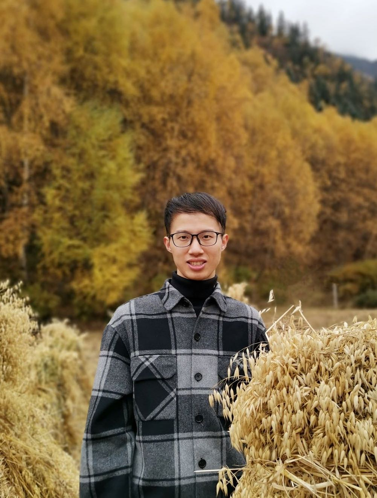

|  |
个人简介
2013年6月高中毕业于厦门市集美中学，2017年7月本科毕业于厦门大学自动化系，2017年9月进入清华大学自动化系直接攻读博士学位，2021年12月提前通过毕业答辩，2022年1月加入南开大学数学科学学院任副教授。
曾获得 4 次国家奖学金、2017年厦门大学文庆奖学金（全校共10个名额）、2021年清华大学“学术新秀”称号（全校共10个名额）等多项奖学金和荣誉。曾在10余项省级及以上的科创比赛中获奖。曾协助指导多名本科生及研究生，其研究成果发表于Nature Machine Intelligence、Nucleic Acids Research、BMC Bioinformatics，并获评清华大学本科生优秀毕业设计。
研究方向为通过机器学习和统计建模方法解析生命组学数据，欢迎有兴趣的本科生或研究生一起合作！